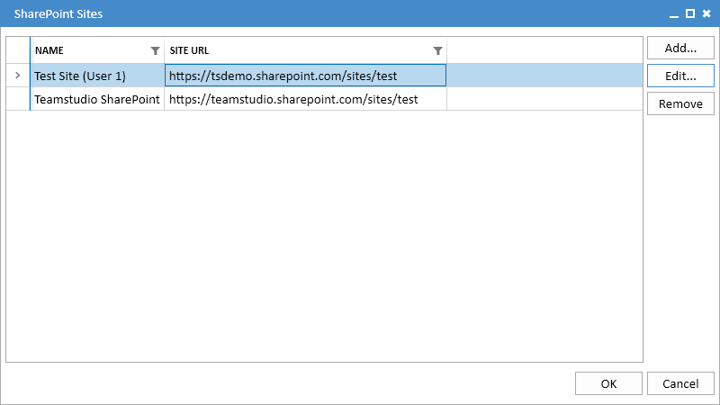
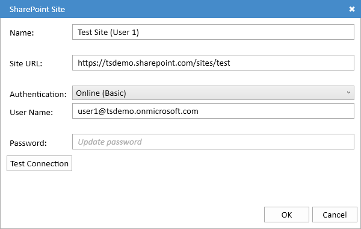
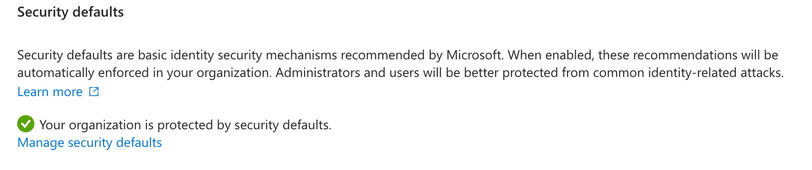
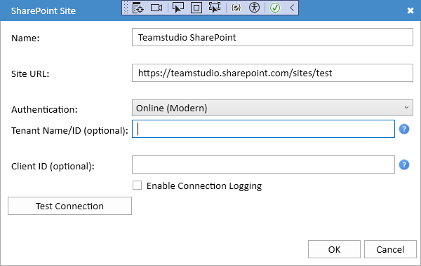

Configuring SharePoint
Clicking the Sites... button will display the SharePoint Sites dialog, allowing you to manage your SharePoint site configurations.

Each site configuration defines the location (URL) of a SharePoint site, along with the authentication method and, if necessary, credentials needed to access it.
Configuring a Site
You can use the Add... and Edit... buttons to create a new site or edit an existing one. Choosing either option will display the SharePoint Site dialog.

This dialog will look slightly different depending on the authentication method selected.
Common Settings
- Name A name used to refer to the site. This can be any text you choose, and is only used to identify the site in the Export UI.
- Site URL The full URL of the SharePoint site.
- Authentication The authentication method. Export currently supports two methods:
- Online (Basic) SharePoint Online with basic username/password authentication.
- Online (Modern) SharePoint Online using modern OAuth authentication.
Online (Basic) Authentication
This authentication method is used with SharePoint Online if your organization still allows basic username/password authentication. Note that this method is disabled by default in SharePoint Online and would have to have been explicitly re-enabled by your admin team. An admin can verify whether it is available by logging into Microsoft Entra, selecting Overview and then Properties. At the bottom of the screen, you will see the Security Defaults setting. If this says

then you are using modern authentication and will not be able to log in with a username and password.
If username and password authentication is available to you, then choose Online (Basic) as the authenticaion method. Your dialog will look like this:
Enter your username and password into the appropriate fields. You can use the Test Connection button to verify that everything is working correctly. Your password will be encrypted using the Microsoft Data Protection APIs (DPAPI) and will not be readable by any other user logging onto the computer.
Online (Modern) Authentication
This authentication method for SharePoint Online offers significantly enhanced security and is recommended for most users.
If you select Online (Modern) authentication, your dialog will look like this:

While this method uses a Tenant ID and Client ID, Export can usually provide these values automatically and you will leave these fields blank.
Tenant ID
The Tenant ID identifies your organization on Microsoft 365. If your Site URL is of the form https://<tenant>.sharepoint.com/... then <tenant> is your tenant name, and Export will be able to retrieve the Tenant ID automatically. In that case, you can leave the Tenant Name/ID field blank. If your Site URL is not on sharepoint.com then you will need to ask your administrator for your tenant name or ID. You can enter either into the Tenant ID field.
Client ID
The Client ID identifies the application that you will use to access SharePoint. In most cases, you can leave this blank to use the default Teamstudio Export application that we have registered. If your organization does not allow you to grant access to third-party applications then your administrator will need to register a private application as described below. They can then give you the Client ID for that application.
Once you have set your Tenant ID and Client ID if necessary, you can use the Test Connection button to verify that everything is set up correctly. The first time you use it, you will be prompted to log in with your username and password. This will generate an access token that will saved on your computer so that you do not need to log in again. The access token is saved in a file named MSALCache in your local application data folder, usually AppData\Local\Teamstudio in your home folder. As with passwords, this file is encrypted using DPAPI and is not readable by any other user logging onto the computer.
If you have problems connecting, you can enable detailed connection logging by checking the Enable Connection Logging box. This will write a detailed connection log to a log file in your local application data folder. The log will not include any personally identifiable information.
Registering Teamstudio Export in Entra
These are instructions for your SharePoint Online administrator. They are necessary only if you cannot or do not want to use the default application that we have registerd. In most cases they will not be needed. Your administrator can configure SharePoint Online to allow application access and give you the necessary values you need to configure Export.
Export must be registered as an application in Microsoft Entra with the necessary permissions to write and create lists. This is performed from Microsoft Entra.
- Expand the Applications category and choose App Registrations.
- Choose New Registration.
- Enter Teamstudio Export as the name.
- Under Supported Account Types, choose Accounts in this organizational directory only.
- Under Redirect URI (Optional), choose Public client/native from the dropdown and enter http://localhost as the URI. Note that this must be http, not https. Also, this step is not optional!
- Click the Register button to create the application.
- Export will be creating lists in SharePoint, so it needs to be given the necessary permissions. To do this, select API permissions under Manage.
- Click Add a permission. Select SharePoint from the list of applications, and then Delegated permissions. Check the AllSites.Manage permission, and then click the Add permissions button.
That will register the application with the necessary settings. From the application overvew, you can copy the Application (client) ID value and the Directory (tenant) ID. These are the values that your users will need to configure Export.